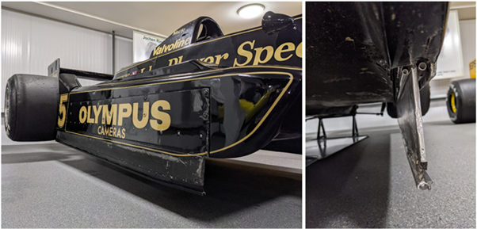

The progression of aerodynamics from the 1968 Monaco Grand Prix up until today in 2023 has been an astonishing journey signposted by great developments such as the addition of aerofoils to Hill's Lotus and the introduction of Wing endplates. As teams researched more, there were breakthroughs in design. One outstanding example was the use of ground effect pioneered by Colin Chapman of Team Lotus. It was so effective that The FIA had to ban the technology as cars were cornering too quickly for their own good. However 40 years later, the FIA reintroduced this technology for a greater purpose: to allow for closer wheel to wheel racing. This allowed for more thrilling racing and attracted huge a audience from around the world. Formula 1's evolution, and relentless research and development in aerodynamics, has led the sport to see levels of speed and agility from cars, never seen before this breakthrough. Formula 1 will continue to push boundaries and continue to evolve to stay relevant, as the fastest motorsport discipline in the world.
Introduction
In 1950 the world witnessed the first Formula 1 world championship season with teams such as Alfa Romeo, Ferrari, and Mercedes-Benz rolling out with elegant, smooth and relatively simple looking cars. Fast forward today in 2023, and those very same teams are now running with more complex and even faster machinery. This is due to the incredible advancements made in aerodynamics by the teams, helping suck the car down into the tarmac (Red Bull, 2022). In turn, this allows for cornering speeds of up to +190 mph pulling nearly 7g of lateral acceleration (Formula 1, 2017). This was achieved by using aerofoils, and ground effects to help create downforce and force all 4 tyre into the track to ensure maximum grip at speed. This made these machines faster but not always safer.
Aerofoils: Front and Rear wings
The use of Aerodynamics in Formula 1 was first seen on Graham Hill’s Lotus at the Monaco Grand Prix of 1968. This came in the form of a front and rear aerofoil.
Figure 1, Graham Hill driving his Lotus 49b around the streets if Monte-Carlo (Sports.ru, 2018)
These aerofoils gave resemblance to an upside-down aeroplane wing, the engineers at Lotus cleverly understood that if a normal wing could make an aeroplane fly, an inverted wing should create a similar force but in the other direction (Fagnan, 2018). As a result, Hill was able to corner faster and break later due to the help the aerofoils gave the car. On that Saturday, Hill took Pole position by a margin of 0.6 seconds, he went on to dominate the race the following Sunday.
The wings worked by creating a pressure difference (low-pressure on the underside and higher-pressure top surface) by redirecting incoming airflow as far up as possible. This difference in pressure causes a force, pushing the car down into the track called downforce (Hughes, M. and Piola, G., 2022).Think of it like moving you hand through water at a swimming pool, If you flatten you hand and move it through the water will easily slice though the water without much force. However, If you angle your hand and move it though the water you will notice a downwards force pushing your hand down into the water. This is the type of effect that is achieved by these aerofoils.
As teams and engineers invested and researched into aerodynamics many more innovations came along such as the endplate to reduce losses at the wing-tip of the aerofoil, and multi-element wings to help create more consistent and higher downforce figures. However, one such engineer would develop a design so effective that it would outlawed by the F1 rules in less than 5 years of its introduction.
Ground-Effects: The Underfloor
The ground-effect is based on Bernoulli’s equation, known as one of the basics of Fluid Mechanics Theory. In simple terms, it states that when a fluid flows through a constriction, its speed will increase and its pressure will decrease. Since air is also considered a fluid, it could be applied to a racing car’s aerodynamics. If the underfloor is shaped correctly, it is possible to create a low-pressure area under the car. This low-pressure area, effectively sucks the car to the track creating incredible downforce figures (and produces over 60% of the total downforce) (Pandit, A. and Day, G.H.G., 2021), far higher than what a front and rear aerofoil could produce, combined.
figure 3
This is the phenomenon known as ground-effect (colinchapmanmuseum, n.d.). The owner and chief designer of Team Lotus, Colin Chapman pioneered this technology. Team Lotus also came up with improvements such as the ‘Floor Skirt’ (classicteamlotus, n.d.) which helped seal the underfloor to reduce losses of downforce due to air bleeding out from under the floor and out of the sides of the car at speed.

However, this advancement in F1 aerodynamics came at a cost. Drivers had lost their lives driving these incredible machines. Cornering speeds were rising to dangerous levels by the end of the 80s, and f1 cars were just too fragile to be handling the monstrous loads put on them. If the Floor Skirts or underfloor were damaged even slightly the consequences were deadly, usually ending in violent spins into barriers. So the Fédération Internationale de l'Automobile (FIA) intervened, banning skirts and effectively ruling out use of ground effects (Hunter, 2023) in 1982.
However, 40 years on in 2022, the ground effect rules were reintroduced by the FIA, but for a different purpose this time. The purpose of ground effect now is to help with closer wheel-to-wheel racing due to the cleaner and less turbulent wake left behind F1 cars (imperialsociety, n.d.) .This allows for a following car to stay closer and fight for longer with the leading car, without making the cars much slower than what they used to be in 2017-2021 (downforce-monster era).
Conclusion
Formula 1’s evolution through the years have created mind blowingly fast machines from relatively simple beginnings. This shows that without a doubt research and development into aerodynamics has played a crucial role in keeping f1 relevant as the fastest and highest class of motorsport racing in the world. This development has led to create some of the most impressive spectacles such as the Mercedes-Benz W11 F1 car, reaching and sustaining a minimum cornering speed of 186mph and +6g of lateral acceleration around Pouhon (a 70 degree double left-hand) corner at Spa-Francorchamps. And from here on out F1 cars will only get faster and faster.
colinchapmanmuseum, (n.d.). Lotus 79: Black Beauty: The Sign of the Black Horse | Colin Chapman Archive and Resource. [online] Available at:http://www.colinchapmanmuseum.co.uk/?page_id=2538. colinchapmanmuseum.co.uk (Accessed: 19 November 2023)